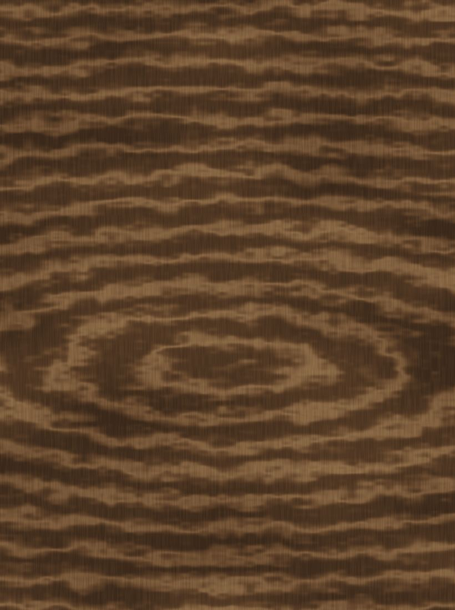
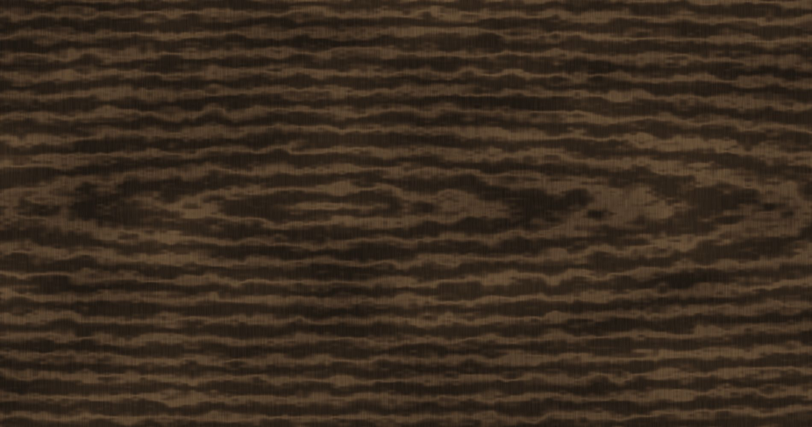

Ébéniste — Lyon — Depuis 2014
Cormier.
Agencements en bois massifChaque pièce naît d'une essence, d'un geste, et du temps qu'il faut.
Savoir-faire02
La matière d'abord, le geste ensuite.
Privilégier le bois massif, les assemblages traditionnels, les finitions à l'huile — et le temps qu'il faut.
À l'atelier, tout commence par le bois : on choisit la planche, on lit son fil, on la laisse se stabiliser. Rien n'est précipité.
Les assemblages sont traditionnels, pensés pour tenir des décennies ; les finitions se font à l'huile, à la main, pour que la matière reste vivante au toucher.


Un atelier à Lyon, du bois massif, et le temps qu'il faut.
Depuis 2014 · Sur-mesure · Bois massif